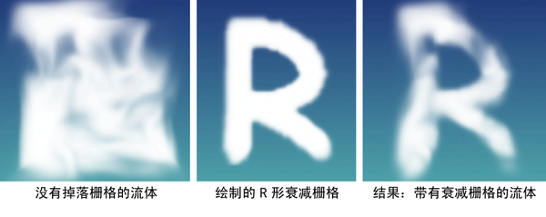
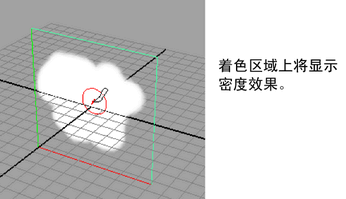
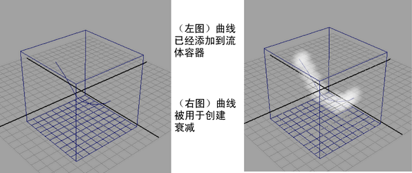

如果不希望流体作为体积的一部分显示，可以通过绘制衰减区域或使用容器中的曲线来指定衰减区域。这将使边比碰撞更软，不会在该区域中累积任何密度。若要进一步软化边，可以调整“边衰减”(Edge Dropoff)。衰减可以用于您需要控制模拟的形状的任意位置，只要模拟自身看起来没有太大不同。例如，如果要保证云保持包含在特定形状中，可以绘制衰减。您也可以使用衰减定义爆炸的大致形状或者控制薄雾的路径。衰减不会影响整个模拟，仅影响可见的流体部分。
在下面的图像中，字母“R”使用“流体效果”(Fluid Effects)创建，它将像云扩散一样消失。流体体积中使用“湍流”(Turbulence)来进行推动。无论密度如何变化，衰减栅格将剪切出“R”形。

显示“流体效果”(Fluid Effects)的衰减
- 若要启用衰减显示，请选择流体容器并在 fluidShape“属性编辑器”(Attribute Editor)中执行以下操作：
- 在“内容方法”(Contents Method)部分中，从“衰减方法”(Falloff Method)下拉列表中选择“静态栅格”(Static Grid)。
- 在“着色”(Shading)部分中，从“衰减形状”(Dropoff Shape)下拉列表中选择“使用衰减栅格”(Use Falloff Grid)。
- 在“显示”(Display)部分中，从“着色显示”(Shaded Display)下拉列表中选择“衰减”(Falloff)。
- 使用容器中的曲线或使用“绘制流体工具”(Paint Fluids Tool)创建衰减样式。
- （可选）在 fluidShape“属性编辑器”(Attribute Editor)的“着色”(Shading)部分中，调整“边衰减”(Edge Dropoff)值。使用“使用栅格”(Use Grid)时，建议为“边衰减”(Edge Dropoff)输入值 0.5。
为“流体效果”(Fluid Effects)绘制衰减
- 选择“流体效果”(Fluid Effects)栅格。
- 选择
 。
。 “绘制流体工具”(Paint Fluids Tool)设置窗口将显示。
- 从“可绘制属性”(Paintable Attributes)下拉列表中选择“衰减”(Falloff)。
在绘制之前，请确保如为流体效果显示衰减中一样设置衰减显示设置。
- 绘制流体栅格以创建衰减形状。 
使用容器中的曲线为“流体效果”(Fluid Effects)创建衰减。
- 选择“流体效果”(Fluid Effects)栅格，然后按住 Shift 键并选择需要的曲线。
- 选择 > 。
“使用曲线选项设置流体内容”(Set Fluids Contents With Curve Options)窗口将显示。
- 请执行以下操作：
- 启用“密度”(Density)。
- 启用“衰减”(Falloff)。
- 调整“衰减”(Falloff)和“半径”(Radius)值。
- 单击“应用并关闭”(Apply and Close)。
曲线现在即代表衰减形状。

缓存衰减数据
- 在 fluidShape“属性编辑器”(Attribute Editor)（“内容详细信息”(Contents Details)部分 >“栅格缓存”(Grids Cache)子部分）中，启用“读取衰减”(Read Falloff)。